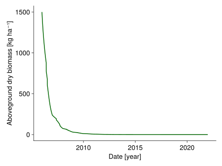

How to turn-off subprocesses of the model
Mainly for debugging purposes, it is possible to turn off subprocesses of the model. This can be useful to understand the effect of a single subprocess on the model output.
Load packages:
import GrasslandTraitSim as sim
using CairoMakie
using Unitful
using Statistics
using PrettyTablesAll the subprocesses that can be turned off are listed in the included_keys variable. Let's check which parameters are used in each subprocess. Note that some parameters are used in multiple subprocesses and are therefore not listed in the table below:
included_keys = (
:senescence,
:senescence_season,
:potential_growth,
:clonalgrowth,
:mowing,
:trampling,
:grazing,
:lowbiomass_avoidance,
:belowground_competition,
:community_height_red,
:height_competition,
:pet_growth_reduction,
:sla_transpiration,
:water_growth_reduction,
:nutrient_growth_reduction,
:temperature_growth_reduction,
:season_red,
:radiation_red
)
p_all = sim.SimulationParameter()
p_dict = Dict()
for k in included_keys
included_prep = (; zip([k], [false])...)
input_obj = (; simp = (; included = sim.create_included(included_prep),
likelihood_included = (; biomass = false, trait = false),
npatches = 5))
p = sim.SimulationParameter(input_obj;)
p_notin = keys(p_all)[.!(collect(keys(p_all)) .∈ Ref(keys(p)))]
p_dict[k] = p_notin
end
pretty_table(p_dict; header = ["Subprocess", "Parameter that are only used in the specific subprocess"],
sortkeys = true,
alignment=:l)┌──────────────────────────────┬──────────────────────────────────────────────────────────────────────────────────────────────────────────────────────────────────────────────────────────────────────────────────────────────┐
│ Subprocess │ Parameter that are only used in the specific subprocess │
├──────────────────────────────┼──────────────────────────────────────────────────────────────────────────────────────────────────────────────────────────────────────────────────────────────────────────────────────────────┤
│ belowground_competition │ (:α_TSB, :β_TSB, :b_biomass, :b_sla, :b_lnc, :b_amc, :b_height, :b_rsa) │
│ clonalgrowth │ (:β_clo, :b_biomass, :b_sla, :b_lnc, :b_amc, :b_height, :b_rsa) │
│ community_height_red │ (:α_com_height, :β_com_height, :b_biomass, :b_sla, :b_lnc, :b_amc, :b_height, :b_rsa) │
│ grazing │ (:β_PAL_lnc, :α_GRZ, :κ, :b_biomass, :b_sla, :b_lnc, :b_amc, :b_height, :b_rsa) │
│ height_competition │ (:β_height, :b_biomass, :b_sla, :b_lnc, :b_amc, :b_height, :b_rsa) │
│ lowbiomass_avoidance │ (:α_lowB, :β_lowB, :b_biomass, :b_sla, :b_lnc, :b_amc, :b_height, :b_rsa) │
│ mowing │ (:b_biomass, :b_sla, :b_lnc, :b_amc, :b_height, :b_rsa) │
│ nutrient_growth_reduction │ (:N_max, :δ_amc, :β_amc, :κ_red_amc, :β_η_amc, :η_min_amc, :η_max_amc, :ϕ_amc, :δ_nrsa, :β_nrsa, :β_η_nrsa, :η_min_nrsa, :η_max_nrsa, :b_biomass, :b_sla, :b_lnc, :b_amc, :b_height, :b_rsa) │
│ pet_growth_reduction │ (:α_PET, :β_PET, :b_biomass, :b_sla, :b_lnc, :b_amc, :b_height, :b_rsa) │
│ potential_growth │ (:RUE_max, :k, :b_biomass, :b_sla, :b_lnc, :b_amc, :b_height, :b_rsa) │
│ radiation_red │ (:γ₁, :γ₂, :b_biomass, :b_sla, :b_lnc, :b_amc, :b_height, :b_rsa) │
│ season_red │ (:ST₁, :ST₂, :SEA_min, :SEA_max, :b_biomass, :b_sla, :b_lnc, :b_amc, :b_height, :b_rsa) │
│ senescence │ (:α_sen, :β_sen, :α_ll, :β_ll, :Ψ₁, :Ψ₂, :SEN_max, :b_biomass, :b_sla, :b_lnc, :b_amc, :b_height, :b_rsa) │
│ senescence_season │ (:Ψ₁, :Ψ₂, :SEN_max, :b_biomass, :b_sla, :b_lnc, :b_amc, :b_height, :b_rsa) │
│ sla_transpiration │ (:α_TR_sla, :β_TR_sla, :b_biomass, :b_sla, :b_lnc, :b_amc, :b_height, :b_rsa) │
│ temperature_growth_reduction │ (:T₀, :T₁, :T₂, :T₃, :b_biomass, :b_sla, :b_lnc, :b_amc, :b_height, :b_rsa) │
│ trampling │ (:α_TRM, :β_TRM, :β_TRM_H, :b_biomass, :b_sla, :b_lnc, :b_amc, :b_height, :b_rsa) │
│ water_growth_reduction │ (:δ_sla, :β_sla, :η_min_sla, :η_max_sla, :ϕ_sla, :β_η_sla, :δ_wrsa, :β_wrsa, :β_η_wrsa, :η_min_wrsa, :η_max_wrsa, :b_biomass, :b_sla, :b_lnc, :b_amc, :b_height, :b_rsa) │
└──────────────────────────────┴──────────────────────────────────────────────────────────────────────────────────────────────────────────────────────────────────────────────────────────────────────────────────────────────┘We have to write all the processes that we want to turn off in the included named tuple. Here we want to exclude the potential growth of the species. The named tuple looks as follows:
included = (;
potential_growth = false,
)
input_obj = sim.validation_input(; included, plotID = "HEG01", nspecies = 43);
trait_input = sim.input_traits()
# we also exclude all parameters that are not used
# this is not necessary, but it gives an overview which parameters are used
p = sim.SimulationParameter(input_obj; exclude_not_used = true)(α_com_height = 0.2 m, β_com_height = 5.0 m^-1, β_height = 0.5, α_TSB = 1200.0 kg ha^-1, β_TSB = 2.0, α_PET = 2.0 mm, β_PET = 1.2 mm^-1, δ_sla = 0.5, β_sla = 5.0, η_min_sla = -0.8, η_max_sla = 0.8, ϕ_sla = 0.025 m^2 g^-1, β_η_sla = 75.0 g m^-2, δ_wrsa = 0.8, β_wrsa = 7.0, ϕ_rsa = 0.12 m^2 g^-1, β_η_wrsa = 40.0 g m^-2, η_min_wrsa = 0.05, η_max_wrsa = 0.6, N_max = 35.0 g kg^-1, δ_amc = 0.5, β_amc = 7.0, κ_red_amc = 0.2, κ_red_rsa = 1.0 g m^-2, β_η_amc = 10.0, η_min_amc = 0.05, η_max_amc = 0.6, ϕ_amc = 0.35, δ_nrsa = 0.9, β_nrsa = 7.0, β_η_nrsa = 40.0 g m^-2, η_min_nrsa = 0.05, η_max_nrsa = 0.6, γ₁ = 4.45e-6 ha MJ^-1, γ₂ = 50000.0 MJ ha^-1, T₀ = 4.0 °C, T₁ = 10.0 °C, T₂ = 20.0 °C, T₃ = 35.0 °C, ST₁ = 775.0 K, ST₂ = 1450.0 K, SEA_min = 0.7, SEA_max = 1.3, α_sen = 0.0, β_sen = 0.9 d, α_ll = 2.41, β_ll = 0.38, Ψ₁ = 775.0, Ψ₂ = 3000.0, SEN_max = 3.0, β_PAL_lnc = 1.5, α_GRZ = 1000.0 kg ha^-1, κ = 22.0 kg, α_TRM = 1000.0 kg ha^-1, β_TRM = 5.0 kg, β_TRM_H = 0.5, α_lowB = 100.0 kg ha^-1, β_lowB = 0.1 ha kg^-1, α_TR_sla = 0.03 m^2 g^-1, β_TR_sla = 0.4, b_biomass = 1000.0, b_sla = 0.0005, b_lnc = 0.5, b_amc = 0.001, b_height = 0.01, b_rsa = 0.004)Run the simulation and let's visualize the biomass dynamic without potential growth:
sol = sim.solve_prob(; input_obj, p, trait_input);
species_biomass = dropdims(mean(sol.output.biomass; dims = (:x, :y)); dims = (:x, :y))
total_biomass = vec(sum(species_biomass; dims = :species))
fig, _ = lines(sol.simp.output_date_num, ustrip.(total_biomass), color = :darkgreen, linewidth = 2;
axis = (; ylabel = "Aboveground dry biomass [kg ha⁻¹]",
xlabel = "Date [year]"))
fig[ Info: Zero potential growth!